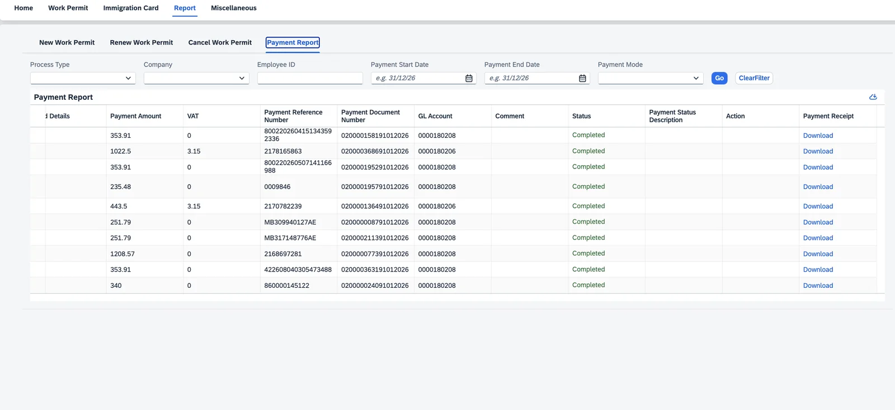

Nothing gets paid without a receipt and a GL code.
Government fees are where the money leaks. Paid on cards, in cash, through Noqodi or e-Dirham, by whoever happens to be at the counter. We make the payment part of the task itself, so money can’t move without leaving a trace.
Captured as you go
Amount, VAT, how it was paid, the date and the reference number are all compulsory on the step itself.
Receipt attached
The scanned receipt has to be attached. No file, no submit, and the step stays open.
We know who paid
Which card, whose card, and whether the company or the employee is carrying the cost. Reimbursement stops being an argument.
Posted to finance
It goes to the right GL account with a payment document number, ready to post in S/4HANA.
Easy to pull
Filter by process, company, employee, dates, payment mode or card holder, then export it for finance.
✓No duplicate payments
Every reference is tied to one step of one case. You can’t record the same fee twice against the same step, and if somebody tries, it shows up right next to the first one.
✓No unaccounted spend
Every dirham leaves with a GL account and a document number on it. Finance reconciles from a report instead of a shoebox full of receipts.
✓Fines have a workflow too
Overstay, traffic, labour and immigration fines get raised by the PRO, go through the HRBP to payroll, and once they’re approved they sit as a payroll deduction with the HRBP copied in.
